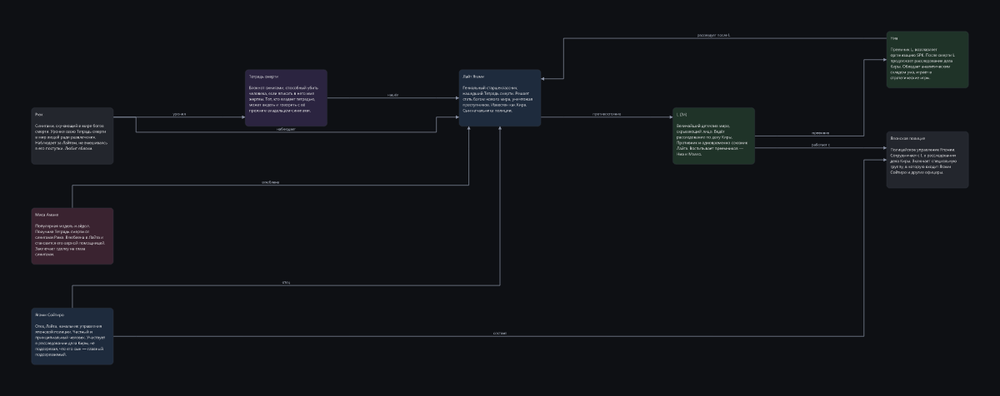
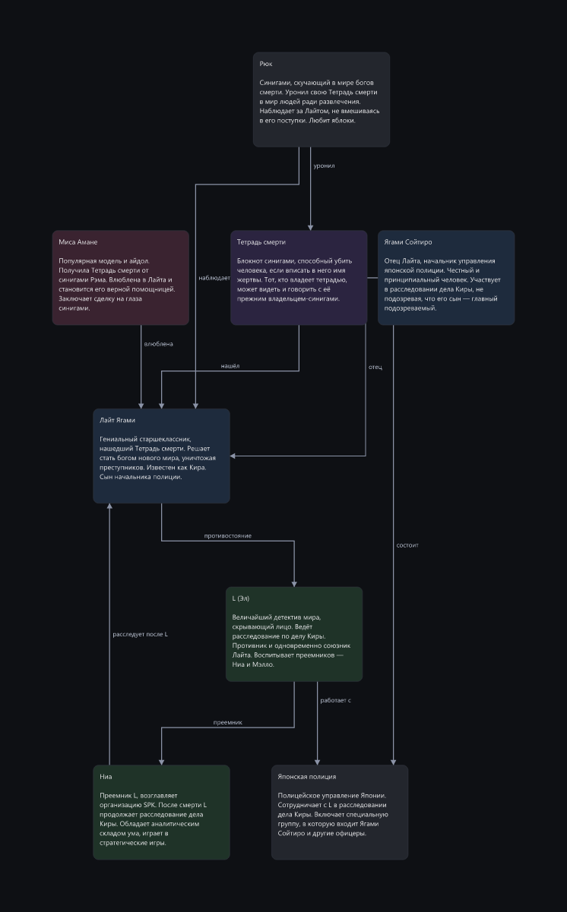
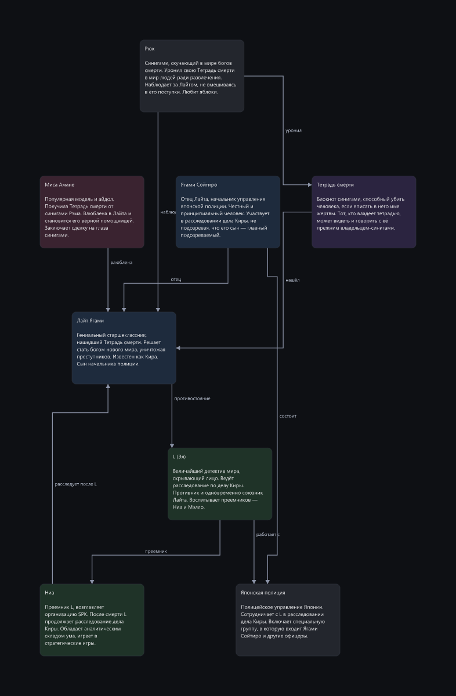
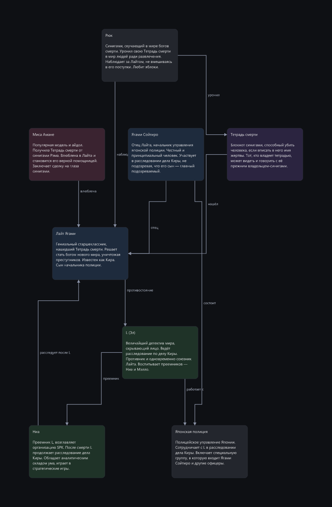

Узлы расставляет каждый движок сам, стрелки прокладывает один и тот же роутер, оценивает одна и та же метрика. Разница — только в расстановке.
штраф 11.5 · пересечений 2 · наложений 0

штраф 51.5 · пересечений 2 · наложений 0

штраф 19.5 · пересечений 1 · наложений 0
штраф 39.3 · пересечений 3 · наложений 0

штраф 31.3 · пересечений 3 · наложений 0
